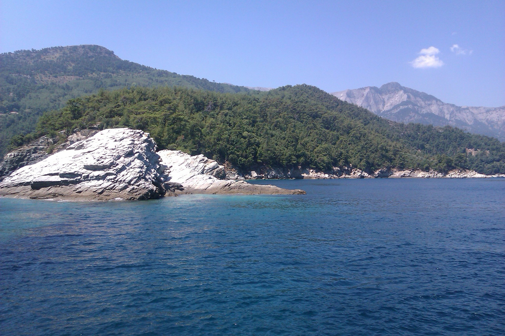
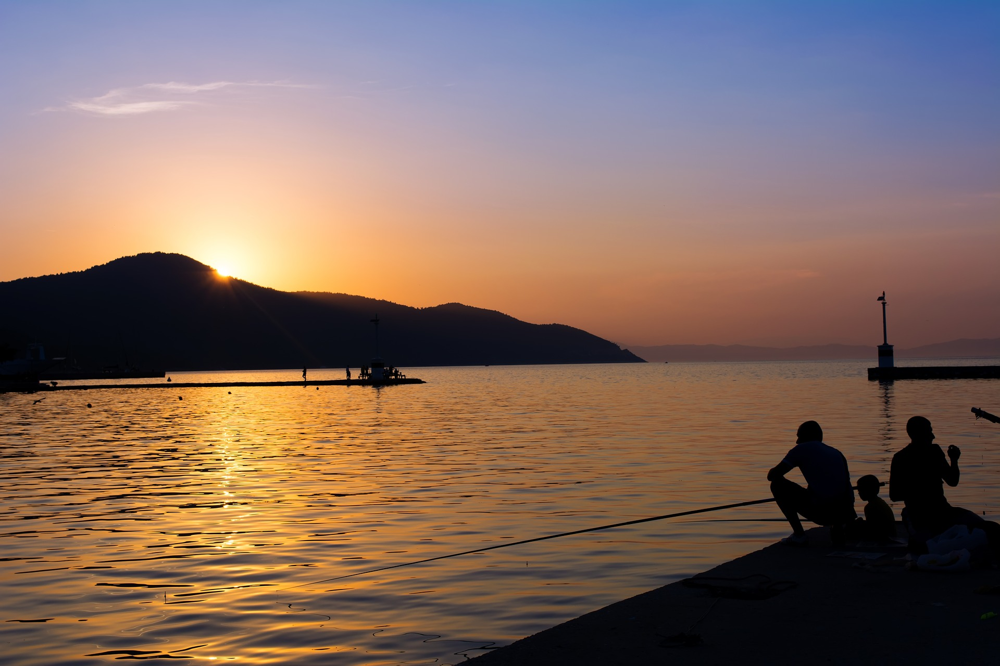
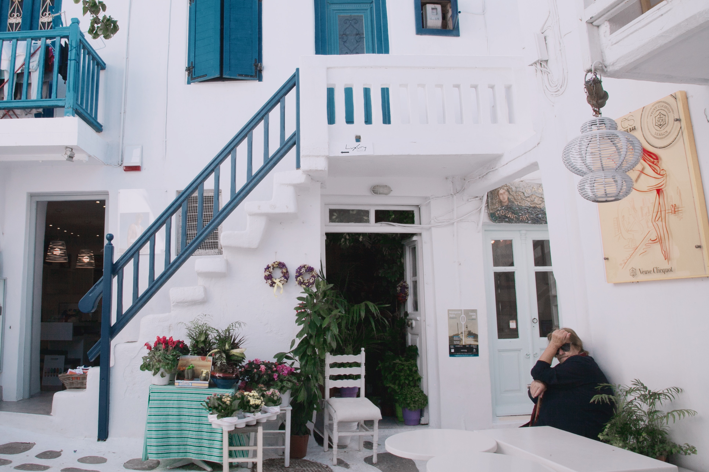
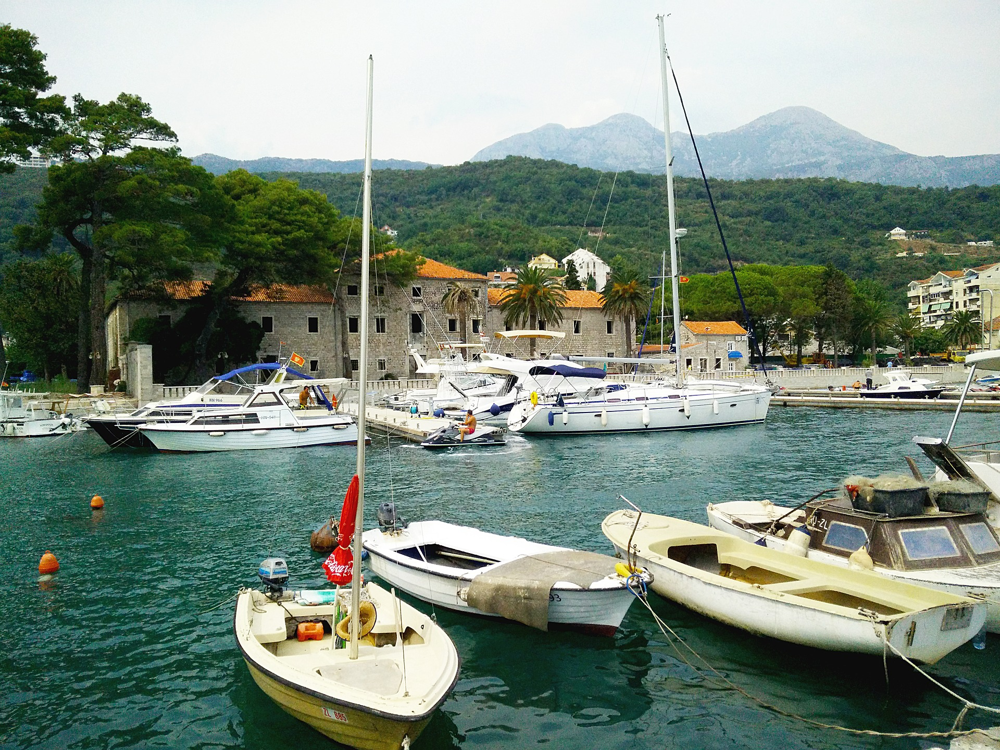
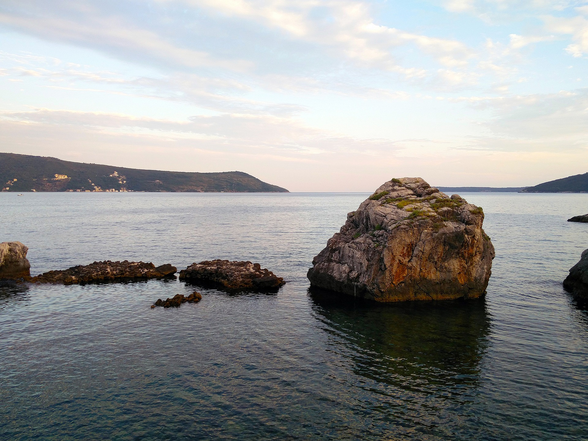
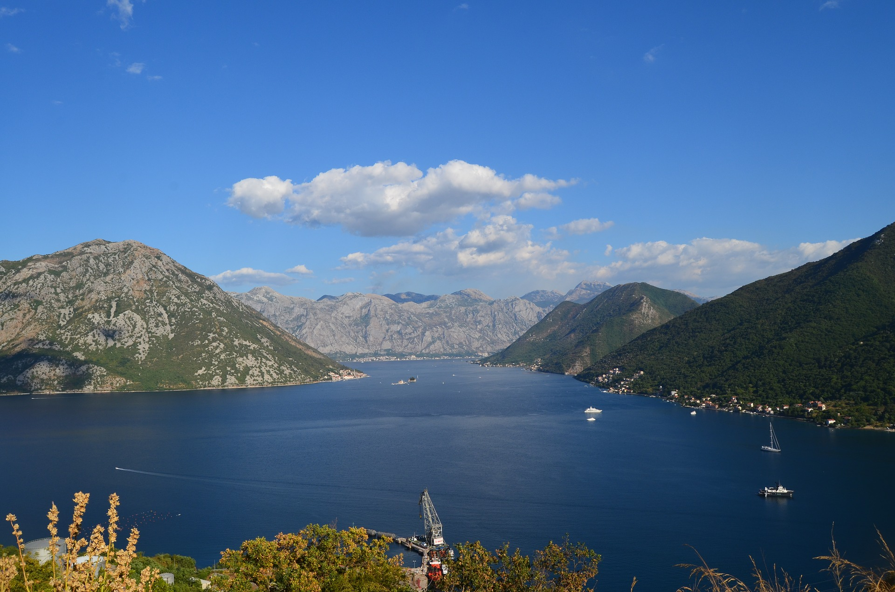
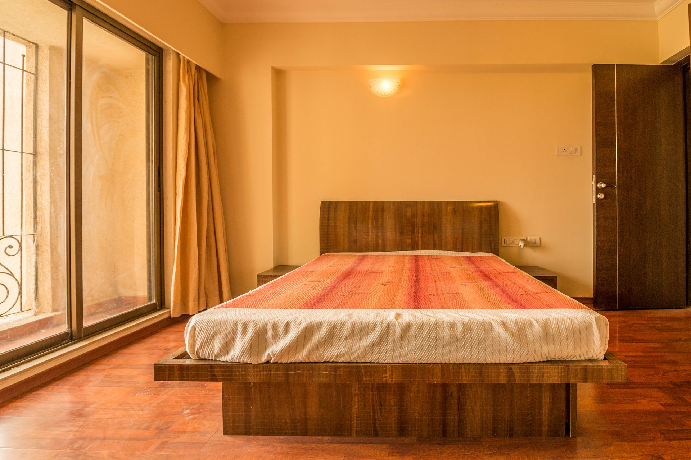

Ostrvo Tasos je već dugi niz godina jedna od omiljenih destinacija naših turista, za koju se interesovanje ne smanjuje vremenom.
Nalazi se oko 190 km istočno od Soluna ali je većim delom autoput tako da putovanje ne traje dugo.
Tasos je ostrvo poznato po gostoljubivim stanovnicima koji su veoma razvili jednu od osnovnih delatnosti ostrvljana - turizam.
Pored turizma poznat je po belom mermeru ali i po pčelarstvu koje je veoma važna delatnosti na ostrvu.
Na severu ostrva je glavni grad ostrva – Limenas a na jugu ostrva su Limenarija i Potos.
Trajekt iz Keramotija vozi na svakih pola sata i vožnja traje oko 45 minuta pa preporučujemo ovu varijantu u odnosu na trajekt iz Kavale koji duplo duže plovi i cena je viša.
Limenas je glavni grad ostrva i u njega stižu trajekti iz luke Keramoti, to je gradić koji pored turističkih sadržaja pruža i ono što mnoga druga letovališta ne mogu, a to su arheološki ostaci u samom gradu i posebno Agora, drevna pijaca na čijem ulazu je i Arheološki muzej.
Limenas pruža mogućnost da menjate plaže čak iako niste došli automobilom jer, šetalištem uz more možete iz centra doći do poznate plaže Papias i još malo dalje do plaže Tarzanas.
Kamena popločana glavna ulica nudi suvenire, neophodne sitnice, mesta za odmor i uživanje u specijalitetima ostrvske kuhinje, na peščanoj plaži su kafići sa uređenim delom s ležaljkama i separeima.
Limenaria je gradić na jugu ostrva, 3 km severno od Potosa.
Ukoliko volite da šetate pored mora i ne želite gužvu na plaži Limenarija je izbor za Vas.
Plaža je duga nekoliko kilometara, peščana na obali dok je ulaz u vodu uglavnom kamenit.
Supermarketi, taverne, barovi su tu da Vam učine dostupnim sitnice neophodne tokom Vašeg odmora.
U ponudi su vila Nikolas*** u Limenasu i vila Alexandros** u Limenariji.
Vila Nikolas*** se sastoji od 9 dvokrevetnih i 7 trokrevetnih studija. Poseduje Wi-fi, sopstveni parking i bazen sa šankom, ležaljakama i
suncobranima u dvorištu vile koji je besplatan svim gostima vile. Udaljena je 50m od
gradske plaže u mirnom delu grada, a od centra 350m. Najbliži supermarket je udaljen 100m.
Idealna za porodice sa malom decom.
Cene u vili Nikolas*** u Limenasu izražene u evrima po izmajmljenom studiju u trajanju od 10 noćenja/11 dana.
U ponudi su dvokrevetne i trokrevetne sobe.
U cenu nije uračunat autobuski prevoz koji iznosi 60€ po osobi (povratna karta).
23.05 - 02.06.
02.06 - 12.06.
12.06 - 22.06.
22.06 - 02.07.
02.07 - 12.07.
12.07 - 22.07.
22.07 - 01.08.
01.08 - 11.08.
11.08 - 21.08.
21.08 - 31.08.
31.08 - 10.09.
10.09 - 20.09.
20.09 - 30.09.
Dvokrevetna soba
100
110
180
235
265
315
345
370
370
330
245
180
120
Trokrevetna soba
150
160
230
285
335
355
375
400
400
350
285
200
150
Vila Alexandros** se sastoji od 6 dvokrevetnih i 5 trokrevetnih studija. Poseduje Wi-fi (koji se dodatno naplaćuje 0.5€/dan po studiju) i sopstveni parking. Udaljena je 120m od gradske plaže u samom centru grada. Odmah pored vile se nalazi supermarket, taverna i suvenirnica.
Cene u vili Alexandros** u Limenariji izražene u evrima po izmajmljenom studiju u trajanju od 10 noćenja/11 dana.
U ponudi su dvokrevetne i trokrevetne sobe.
U cenu iz tabele nije uračunat autobuski prevoz koji iznosi 60€ po osobi (povratna karta).
23.05 - 02.06.
02.06 - 12.06.
12.06 - 22.06.
22.06 - 02.07.
02.07 - 12.07.
12.07 - 22.07.
22.07 - 01.08.
01.08 - 11.08.
11.08 - 21.08.
21.08 - 31.08.
31.08 - 10.09.
10.09 - 20.09.
20.09 - 30.09.
Dvokrevetna soba
100
120
150
205
255
300
330
350
350
310
255
160
120
Trokrevetna soba
150
160
200
245
305
335
355
370
370
320
250
190
150

Tasos

Tasos

Apartman Nikolas***
Apartman Alexandros**
Program puta i uslovi plaćanja:
Program puta:
1. Dan – Polazak iz Beograda u večernjim časovima sa parkinga pored direkcije “Laste” tačno vreme i mesto polaska autobusa proveriti 2 dana pre putovanja. Noćna vožnja kroz Srbiju i Makedoniju prema Grčkoj. 2. Dan – Dolazak u jutarnjim časovima. Smeštaj od 16:00 časova (postoji mogućnost ranijeg ulaska). 3 – 10. Dan – Boravak na bazi 10 noćenja u izabranom smeštaju na bazi odabrane usluge. 11. Dan – Napuštanje smeštaja do 09:00 časova. Slobodno vreme. Polazak za Srbiju u poslepodnevnim časovima po lokalnom vremenu (za tačno vreme povratka informisati se kod predstavnika agencije). Noćna vožnja kroz Grčku i Makedoniju prema Srbiji. 12. Dan – Dolazak u Beograd u prepodnevnim časovima.
Uslovi plaćanja:
Plaćanje je isključivo u dinarskoj protivvrednosti po prodajnom kursu poslovne banke BANCA INTESA za efektivu, na dan uplate.
Celokupan iznos aranžmana do 9 mesečnih rata za korisnike VISA, AMERICAN EXPRESS i MASTER kreditnih kartica INTESA BANKE i VISA,
MASTER i DINA kreditnih kartica KOMERCIJALNE BANKE - isključivo u agenciji ConnectTravel,
ili 30% od ukupne cene aranžmana prilikom rezervacije, a preostali iznos do pune cene aranžmana gotovinski,
platnim karticama najkasnije 21 dan pre početka aranžmana ili u 8 jednakih mesečnih rata -
čekovima građana (deponuju se prilikom rezervacije), bez kamate ili kompletan iznos kreditima
kod poslovnih banaka, a na osnovu profakture koja mora biti realizovana u roku od 7 dana od dana izdavanja,
a najkasnije 21 dan pre početka aranžmana.
U slučaju značajnih poremećaja na monetarnom tržištu, cena aranžmana podleže promeni.
NAPOMENA! Nije uključeno u cenu:
Međunarodno putno osiguranje, osiguranje od otkaza ili prekida turističkog putovanja i druge pakete osiguranja,
individualne troškove i usluge koje nisu predviđene programom, boravišnu taksu u iznosima od 0,5 € do 1 € po danu,
po smeštajnoj jedinici, koja se plaća na licu mesta, u zavisnosti od kategorizacije smeštajnog objekta boravka.
CRNA GORA
Herceg Novi
Herceg Novi se nalazi između najviše planine dinarskog masiva, Orjena (1.895 m) i ulaza u jedan
od najlepših zaliva sveta, Boku Kotorsku. U njemu su se susretale i ukrštale različite civilizacije
što je ostavilo duboki trag na njegov današnji izgled. Već prvi pogled na Stari grad otkriva niz
zidina sa visokim i snažnim kamenim tvrđavama i kulama. U samom gradu i njegovoj neposrednoj blizini
nalazi se mnoštvo objekata od istorijskog, kulturnog i verskog značaja.
Herceg Novi je grad sa najvišom prosečnom temperaturom na Jadranskom moru, sa više od 220 sunčanih
dana u godini. Ovo je grad koji nazivaju "gradom večnog zelenila ", mestom u koje su njegovi
pomorci doneli više od 250 vrsta egzotičnog bilja sa svojih dalekih putovanja kao svojevrsno
sećanje na zemlju i ljude , mora i obale svojih dalekih putešestvija.
Poznat je po divnoj mediteranskoj arhitekturi, po bogatom zavičajnom muzeju, naučnoj biblioteci,
filmskom festivalu, umetničkoj galeriji, pravoslavnoj crkvi Sv. Aranđela, šetalištu pored mora...
Jednostavno grad koji pruža lepezu mogućnosti i zadovoljava sve ukuse..
Apartmani Primorje*** se nalaze na samom šetalištu uz plažu. Poseduju 6 dvokrevetnih i 6 trokrevetnih soba.
Od centra Herceg Novog su udaljeni oko 450m, a od najbliže prodavnice 50m. Apartmani nema sopstveni parking.
Cene u apartmanima Primorje*** u Herceg-novom izražene u evrima po izmajmljenom studiju u trajanju od 10 noćenja/11 dana.
U ponudi su dvokrevetne i trokrevetne sobe.
Postoji mogućnost kupovine karata za redovne autobuske linije tokom leta u našoj agenciji. Cena povratne karte je 35€ po osobi.
23.05 - 02.06.
02.06 - 12.06.
12.06 - 22.06.
22.06 - 02.07.
02.07 - 12.07.
12.07 - 22.07.
22.07 - 01.08.
01.08 - 11.08.
11.08 - 21.08.
21.08 - 31.08.
31.08 - 10.09.
10.09 - 20.09.
20.09 - 30.09.
Dvokrevetna soba
80
100
130
185
215
235
255
280
310
300
215
130
120
Trokrevetna soba
130
160
210
245
305
325
335
370
360
330
225
170
160

Meljine

Herceg-novi

Boka Kotorska

Soba u prizemlju u Apartmanima Primorje***
Program puta i uslovi plaćanja:
Uslovi plaćanja:
Plaćanje je isključivo u dinarskoj protivvrednosti po prodajnom kursu poslovne banke BANCA INTESA za efektivu, na dan uplate.
Celokupan iznos aranžmana do 9 mesečnih rata za korisnike VISA, AMERICAN EXPRESS i MASTER kreditnih kartica INTESA BANKE i VISA,
MASTER i DINA kreditnih kartica KOMERCIJALNE BANKE - isključivo u agenciji ConnectTravel,
ili 30% od ukupne cene aranžmana prilikom rezervacije, a preostali iznos do pune cene aranžmana gotovinski,
platnim karticama najkasnije 21 dan pre početka aranžmana ili u 8 jednakih mesečnih rata -
čekovima građana (deponuju se prilikom rezervacije), bez kamate ili kompletan iznos kreditima
kod poslovnih banaka, a na osnovu profakture koja mora biti realizovana u roku od 7 dana od dana izdavanja,
a najkasnije 21 dan pre početka aranžmana.
U slučaju značajnih poremećaja na monetarnom tržištu, cena aranžmana podleže promeni.
NAPOMENA! Nije uključeno u cenu:
Međunarodno putno osiguranje, osiguranje od otkaza ili prekida turističkog putovanja i druge pakete osiguranja,
individualne troškove i usluge koje nisu predviđene programom, boravišnu taksu u iznosima od 0,5 € do 1 € po danu,
po smeštajnoj jedinici, koja se plaća na licu mesta, u zavisnosti od kategorizacije smeštajnog objekta boravka.